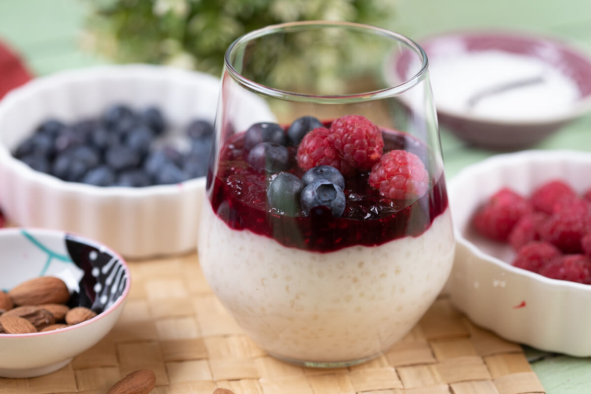

Áfonyás tápiókapuding

Hozzávalók
Puding
- 20 dkg tápióka
- 4 dl kókusztej
- 2 dl tej
- 4 dl víz
- 1 csomag vaníliás cukor
- 3 ek méz
Rétegezés
- 16 ek áfonyadzsem (kb. 4 dl-es üveg)
Elkészítés
A puding elkészítése
- A kókusztejet és a tejet forraljuk fel.
- A vaníliás cukrot, a mézet és a tápiókát adjuk hozzá.
- Közepes lángon, kevergetés közben főzzük teljesen puhára
(kb. 25 perc).
- Ha a folyadékot felszívta, és még mindig
látunk fehér pontot a gyöngyök közepén, adjuk hozzá a
vizet is.
- Ha a gyöngyök teljesen átfőttek és puding állagúvá vált,
vegyük le a tűzhelyről, és hűtsük ki.
Rétegezés
- A kihűlt pudingot rétegezzük az áfonyadzsemmel. Én poharakat
használtam, de fagyis kehely vagy nagy tál is kiválóan alkalmas.
- 1-2 órára tegyük hűtőbe az elkészült pudingot.
Tápanyag táblázat
| Tápanyag |
Mennyiség |
| Fehérje |
1% |
| Szénhidrát |
34% |
| Zsír |
6% |
| Elkészíthetőség |
★★★
|
|